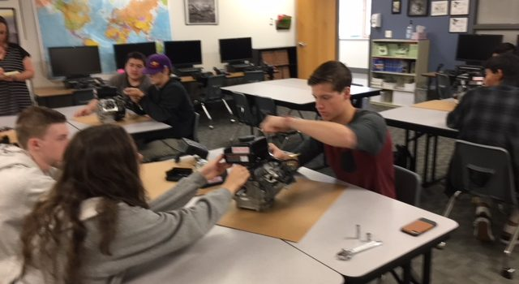
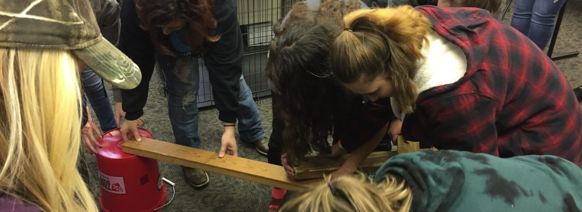
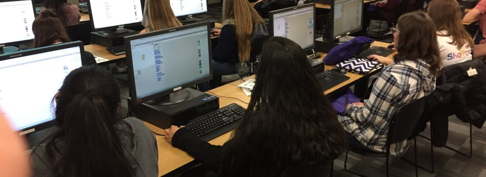
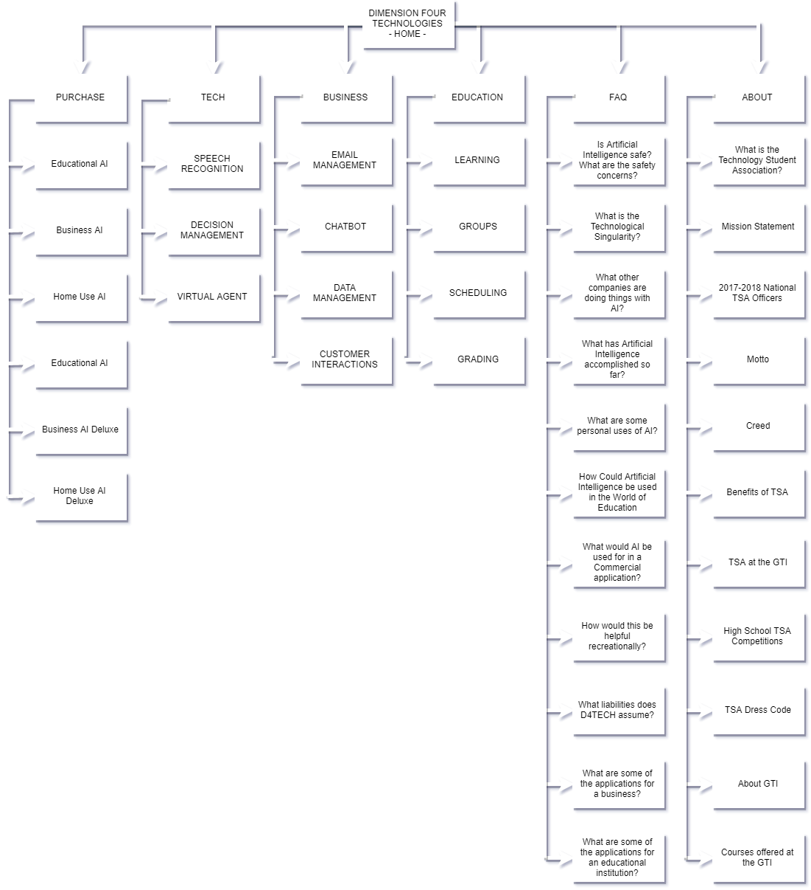

What is the Technology Student Association?
"The Technology Student Association (TSA) is a national, non-profit organization of middle and high school students who are engaged in science, technology, engineering, and mathematics (STEM). Since TSA was chartered in 1978, almost 4,000,000 student members have participated through challenging competitions, leadership opportunities, and community service."
~From the TSA website
Mission Statement
The Technology Student Association enhances personal development, leadership, and career opportunities in STEM, whereby members apply and integrate these concepts through intracurricular activities, competitions, and related programs.
2017-2018 National TSA Officers
President

Ms. Aala Nasir
National TSA President
Deep Run High School
Glen Allen, VA
Vice President
Ms. Jessica Strait
National TSA Vice President
Abingdon High School
Abingdon, VA
Secretary

Ms. Shanda Manasco
National TSA Secretary
Jemison High School
Jemison, AL
Treasurer

Mr. Simon Jolly
National TSA Treasurer
Hardin Valley Academy
Knoxville, TN
Reporter
Mr. Yoshi Torralva
National TSA Reporter
Braden River High School
Bradenton, Florida
Sergeant-at-Arms
Mr. Preston Crawford
National TSA Sergeant-at-Arms
Lowndes High School
Valdosta, GA
Motto
Learning to lead in a technical world.
Creed
I believe that Technology Education holds an important place in my life in the technical world. I believe there is a need for the development of good attitudes concerning work, tools, materials, experimentation, and processes of industry. Guided by my teachers, artisans from industry, and my own initiative, I will strive to do my best in making my school, community, state, and nation better places in which to live. I will accept the responsibilities that are mine. I will accept the theories that are supported by proper evidence. I will explore on my own for safer, more effective methods of working and living. I will strive to develop a cooperative attitude and will exercise tact and respect for other individuals. Through the work of my hands and mind, I will express my ideas to the best of my ability. I will make it my goal to do better each day the task before me, and to be steadfast in my belief in my God, and my fellow Americans.
Benefits of TSA
- Recognition
- Direction and purpose for skills
- Magnified technilogical literacy
- Enhanced leadership techniques and experience
- Option of competing in local, state, and national competitions
- Networking with students and teachers all over the nation who share similar interests
TSA at the GTI
Advisors
- James (Anthony) Byrom
- Michael Zervos
We try to expand beyond TSA to help other people compete, problem solve, and learn about different areas of technology. We especially have focused on assisting the Freedom of Technology Club with their projects.
We are still a fairly new TSA chapterm so we are still figuring out what the best form of organization is for us. Our particular chapter is in a unique situation. Students from all over the Granite School District are bussed from their home schools to the Granite Technical Institute building. Students stay for two class periods, then are returned to their home schools. This setup has been highly beneficial to the students affected, however, it does make it difficult to organize and have meetings that everyone can participate in. We do not currently have officers. We are considering having four representatives, one chosen from each 2 period class block that will report to our advisors and help distribute information to our members.
"We're kind of a flag for all schools." ~Anthony Byrom
At the begining of this year we had an assembly where we featured each of the different clubs housed at the GTI, which has greatly increased participation.
High School TSA Competitions
- 3D Animation
- Animatronics Participants
- Architectural Design
- Architecture Computer-Aided Design (CAD)
- Biotechnology Design
- Chapter Team
- Children's Stories
- Coding
- Computer-Aided Design (CAD)
- Computer Integrated Manufacturing (CIM)
- Debating Technological Issues
- Digital Video Production
- Dragster Design
- Engineering Design
- Essays on Technology
- Extemporaneous Speech
- Fashion Design and Technology
- Flight Endurance
- Future Technology Teacher
- Music Production
- On Demand Video
- Photographic Technology
- Prepared Presentation
- Promotional Design
- Scientific Visualization (SciVis)
- Software Development
- STEM Careers
- Structural Design and Engineering
- System Control Technology
- Technology Bowl
- Technology Problem Solving
- Transportation Modeling
- Video Game Design
- Webmaster
TSA Dress Code
- Official TSA Attire (most formal)
- Navy blue BLAZER with an official TSA patch
- Scarlet red TIE imprinted with an official TSA logo (for both males and females)
- White, button-up TOP with a turn down collar
- Light gray PANTS or SKIRT
- Black or dark blue SOCKS (males only)
- Black dress SHOES (athletic shoes, combat boots, or work boots are considered unacceptable)
- Black open toe SHOES or sandals (females only)
- Professional TSA Attire (less formal)
- Button-up TOP with a turn down collar (T-shirts, polos, golf shirts, or any other informal shirt are considered unacceptable)
- Alternative of a BLOUSE (loose top with a collar, buttons, and sleeves) for females
- TIE (required for males, optional for females)
- Dress PANTS (jeans, shorts, baggy pants, or pants with exterior pockets are considered unacceptable)
- DRESSES or SKIRTS are an alternative for females (skirt must be even with fingertips or longer)
- Black or dark blue SOCKS (males only)
- Black dress SHOES (athletic shoes, combat boots, or work boots are considered unacceptable)
- Black open toe SHOES or sandals (females only)
- Business Casual TSA Attire (least formal)
- Same as professional attire with the following exceptions:
- TIE is not required
- Polos and golf shirts are acceptable TOPS, however, T-shirts are still unacceptable
- Shorts are unacceptable
Granite Technical Institute
The mission of the Granite Technical Institute is to support students in finding personal purpose, potential and a pathway to their future. This is accomplished by helping students achieve in their program and to move seamlessly to further training and employment. Efforts are being made to directly align critical academic subjects with career and technical education courses, thus promoting real-world application to academic theory in such areas as mathematics, science and English. In addition, articulation and collaboration with Salt Lake Community College and other post-secondary institutions is being enhanced in order to make the transition to further education easier for students. Clear pathways of training have been designed to support student growth from the 9th through the 12th grades.
The Department of Career and Technical Education in Granite School District has a well-earned reputation for providing high- quality programs that are targeted at high-demand industries. To further this focus, The Granite Technical Institute offers courses in Health Science & Technology, Engineering, Information Technology, Biotechnology/Biomanufacturing, Culinary Arts, Aviation, Agriculture, Cosmetology/Barbering, and Home Building/Construction.
How to Sign Up
In order to register for any of the classes offered through the Granite Technical Institute, students must first pick up an application in the Career Center of their high school or click on the link below. Once the application is complete and signed by both the student and their guardian, it should be returned to the Career Center for review and approval by the Career Center Coordinator. The Career Center Coordinator will then help the student determine whether or not additional information is required and will help facilitate the scheduling process.
Transportation (Bus)
Transportation (bus) will be provided for students twice daily from the student’s home high school to the GTI. All courses listed in the catalog will be taught at the Granite Technical Institute (2500 South State Street) unless otherwise specified. This schedule is designed to accommodate the two-period block enrollments. Students interested in registering for these courses should see the Career Center Coordinator at their high school. Questions regarding the Granite Technical Institute can be directed to our front office at 385-646-4350
Courses offered at the GTI



DIMENSION FOUR TECHNOLOGIES SITE MAP
